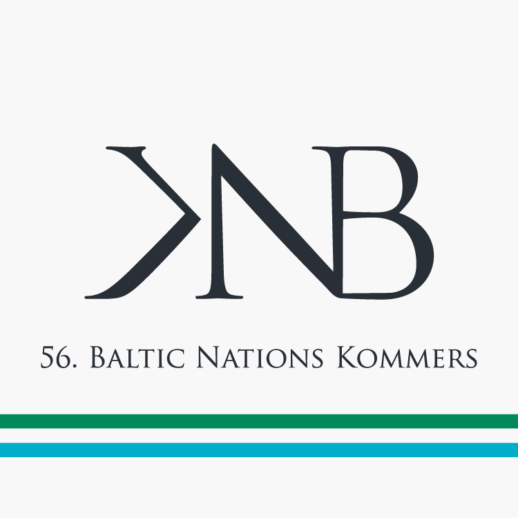

Aktualności
Bal Welecji 30 cze 2019
{kind=link}
Pierwszy powojenny Bal Welecji już za nami. Pośród prawie trzech setek przyjaciół, w murach, w których odbywały się wszystkie przedwojenne warszawskie Bale Welecji, przy dźwiękach wspaniałej muzyki. Bal minął nam szybko, ale ten wieczór pozostanie na zawsze w naszych wspomnieniach. Dziekujemy za obecność!
Bal Welecji już piątek 27 cze 2019
{kind=link}
Szanowni Państwo!
Bal Welecji, który otworzy 56. Komersz Narodów Bałtyckich już w piątek! Zapraszamy do uczestnisctwa w Balu, Sobotniej Mszy Świętej (13:00 kościół pw. Najświętszego Zbawiciela), Koncercie (15:00 Aula Mała Politechniki Warszawskiej), oraz w Warsztatach Tanecznych (od 20:30 Nowy Świat Muzyki). Zapraszamy również na prapremierę wystawy "Welecja i polskei korporacje bałtyckie w odbudowie niepodległej Rzeczpospolitej" wraz z promocją jej katalogu i prelekcją autorów w niedzielę o 13:00 w ogrodach Domu Polonii.
Rejestracja 31 maj 2019
{kind=link}
Zapraszamy do rejestracji na wszystkie wydarzenia 56. Komerszu Narodów Bałtyckich
Bal Welecji 1 maj 2019
{kind=link}
Serdecznie zapraszamy na pierwszy powojenny Bal Welecji, który odbędzie się 28 czerwca, w salonach Domu Polonii w Warszawie. Równo 80 lat później, w dokładnie tym samym miejscu, powraca największe weleckie wydarzenie.
Więcej szczegółów i rejestracja na stronie:
56. Komersz Narodów Bałtyckich 15 mar 2019

Korporacja Akademicka Welecja oraz Towarzystwo Tradycji Akademickiej organizują wspólnie 56. Komersz Narodów Bałtyckich. Ten zjazd studentów zrzeszonych w korporacjach akademickich z Łotwy, Estonii, Niemiec i Polski, będzie miał miejsce w Warszawie w dniach 28-30 czerwca 2019.
Serdecznie zapraszamy!